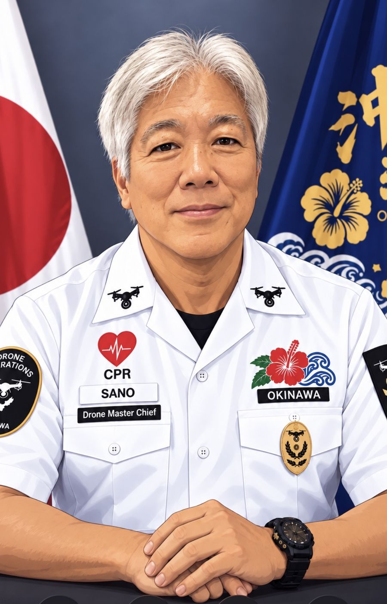
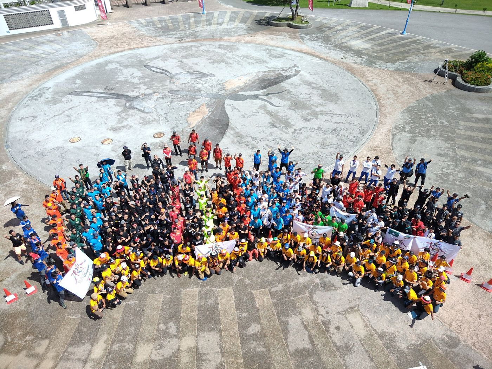
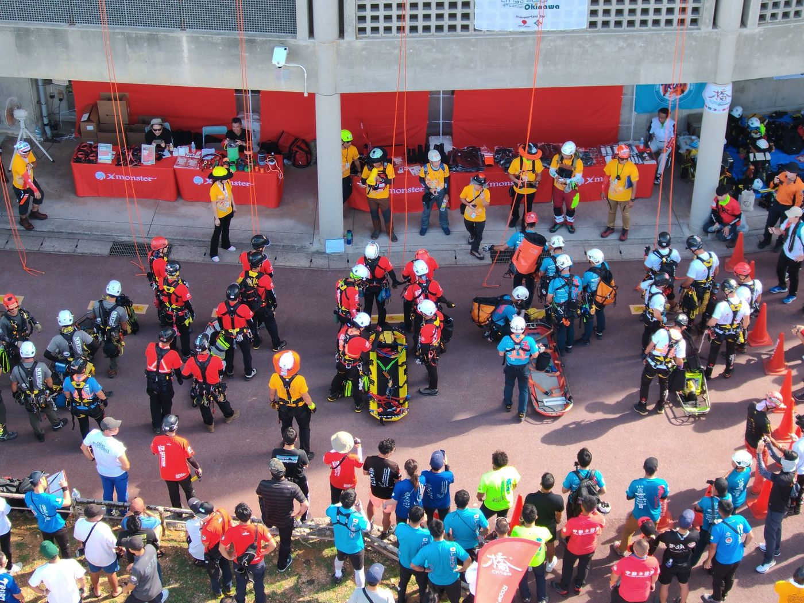
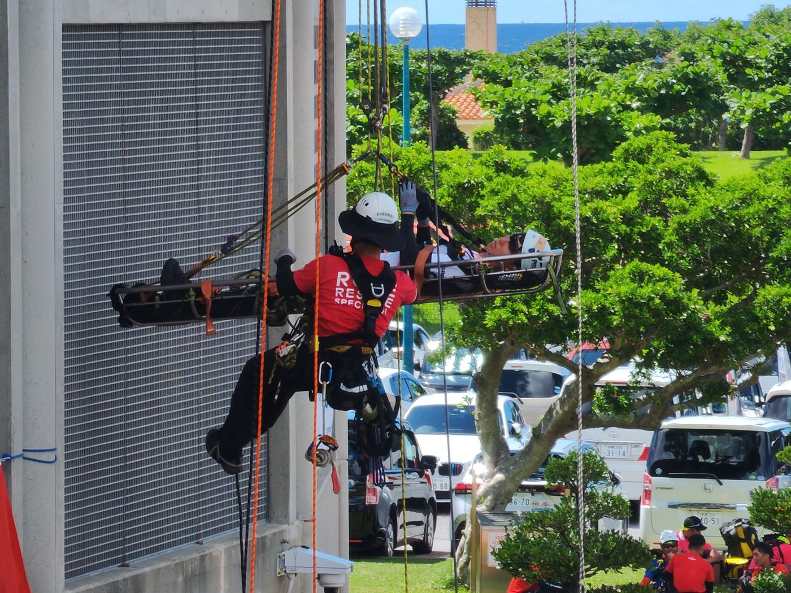
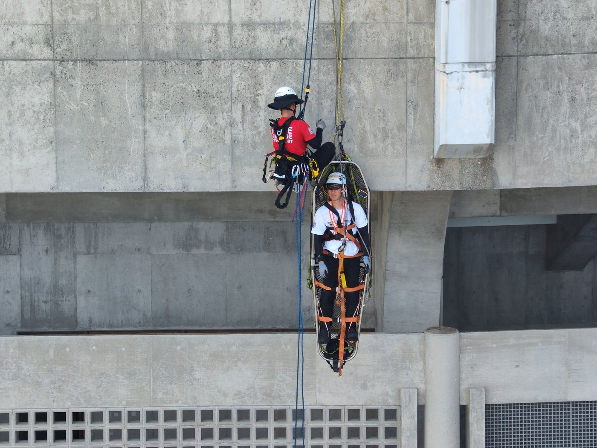
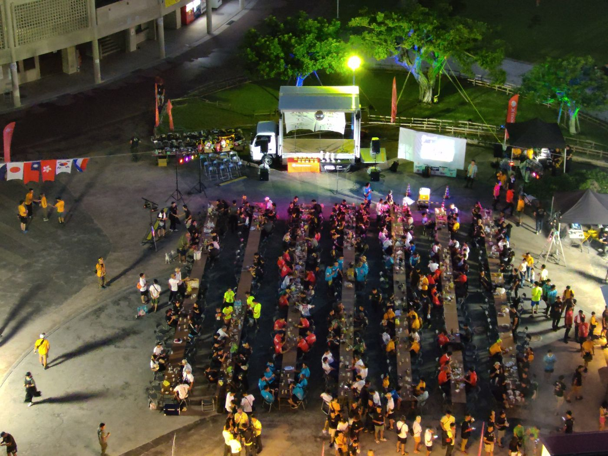

INSTRUCTOR PROFILE
講師紹介
講師紹介
佐野 一裕
ドローン運用・安全管理・救命教育の経験を活かし、
「わかりやすく、実践で使える」指導を大切にしています。
一等無人航空機操縦士
二等無人航空機修了審査員
ドローン救護士指導員
プロフィール
長年にわたる米軍消防での現場経験に加え、ドローンの国家資格指導、空撮、点検、災害対応訓練など幅広い分野で活動しています。初心者の方には基礎から丁寧に、経験者の方には実務を意識した実践的な内容でサポートします。
主な保有資格
無人航空機一等無人航空機操縦士
二等無人航空機修了審査員
二等無人航空機修了審査員
救命・安全教育ドローン救護士 指導員
AHA BLS インストラクター
ARC BLS インストラクター
NSC FAP インストラクター
AHA BLS インストラクター
ARC BLS インストラクター
NSC FAP インストラクター
船舶・無線一級小型船舶操縦士
海上特殊無線資格
海上特殊無線資格
技術系資格第二種電気工事士
認定電気工事従事者
消防設備点検資格 ほか
認定電気工事従事者
消防設備点検資格 ほか
主な実績
空撮・点検
消防署新築工事の定点空撮、発掘調査、工場、イベント、消防救助訓練など多様な現場で撮影・記録を実施。
災害・捜索
行方不明者捜索、救助犬協会との連携、災害対応を見据えたドローン運用訓練に参加。
ロープレスキュー
ロープレスキューアジア大会の空撮を担当。大会全体の記録、実技シーン、夜間会場撮影まで対応。
講習指導
国家資格講習、初心者向け基礎講習、ドローン救護士講習、救命講習など、実務に結びつく指導を提供。
指導で大切にしていること
- 初めての方にもわかりやすい説明
- 安全を最優先にした操縦判断
- 現場を想定した実践的な練習
- 資格取得だけで終わらない、実務につながる内容
- 救命・事故対応まで視野に入れた学び
ドローンは飛ばす技術だけでなく、安全、判断、連携がとても大切です。講習ではその土台づくりを重視しています。
活動写真




